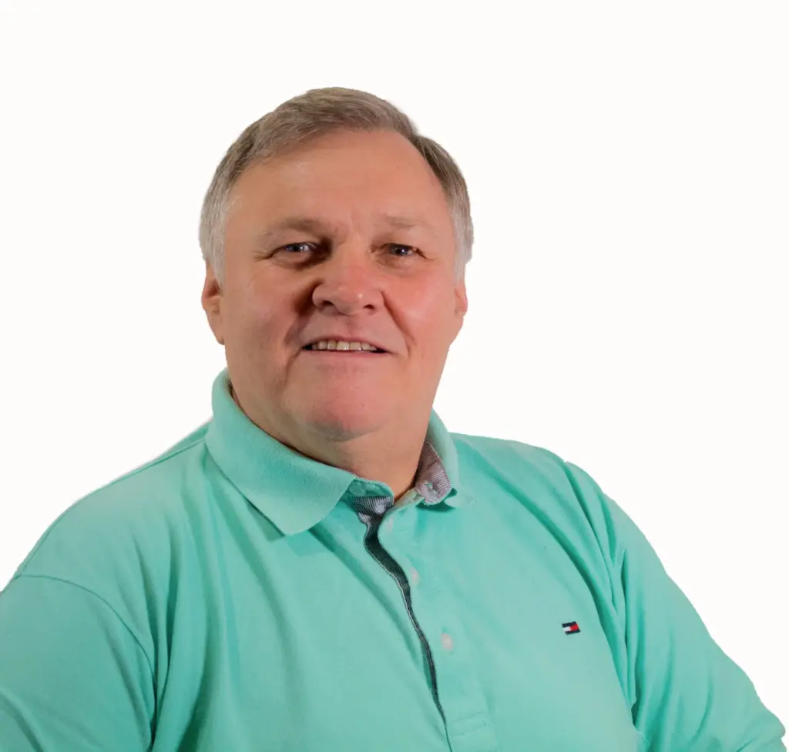

Wir begleiten Sie von der QM-Beratung bis zum fertigen Zertifikat – alles aus einer Hand, in weniger als einer Woche.

Die meisten Anbieter können nur eines: beraten oder zertifizieren. Bei uns bekommen Sie beides – abgestimmt, effizient und ohne Reibungsverluste.
Wir bauen Ihr Qualitätsmanagementsystem auf – praxisnah, schlank und genau passend für Ihr Reinigungsunternehmen.
Über unseren Zertifizierungspartner OnlineCert erhalten Sie Ihr ISO 9001 Zertifikat – schnell, digital und bezahlbar.
ISO 9001 ist in der Gebäudereinigung die meistverbreitete Zertifizierung – und oft Voraussetzung für lukrative Aufträge.
Großkunden und öffentliche Auftraggeber verlangen ein ISO 9001 Zertifikat als Bedingung für Rahmenverträge und Ausschreibungen.
Ausschreibungsfristen sind kurz. Eine klassische Zertifizierung dauert 3–6 Monate – viel zu lang für kurzfristige Chancen.
Akkreditierte Zertifizierer verlangen 4.000–6.000€ plus Reisekosten. Für kleine und mittlere Reinigungsbetriebe oft unerschwinglich.
Wechselndes Reinigungspersonal erschwert stabile Prozesse. Dokumentierte Standards schaffen trotzdem gleichbleibende Qualität.
Ohne dokumentierte Prozesse für Reklamationen, Schulungen und Kontrollen verlieren Sie bei Audits und Kundenanfragen.
Seit 2004 keine Meisterpflicht mehr – die Konkurrenz wächst. Ein ISO-Zertifikat hebt Sie professionell von der Masse ab.
Wir haben für jeden Unternehmenstyp ein passendes Paket – mit branchenspezifischem Anwendungsbereich, der sofort zu Ihrem Betrieb passt.
Der klassische Reinigungsbetrieb: Büros, Treppenhäuser, Glasflächen. Standardisierte Abläufe für gleichbleibende Qualität.
Unterhalts-, Glas-, Grund-, Sonderreinigung plus Facility Services. Für Mittelständler mit breitem Leistungsspektrum.
Produktionsanlagen, Maschinen, Industriehallen. Eigene Sprache, eigene Ausschreibungen, strenge Sicherheitsstandards.
RKI-Richtlinien, strengste Hygienestandards. Für Kliniken, Pflegeheime, Arztpraxen und Labore.
Wachsender Markt, kaum Wettbewerb bei Zertifizierern. Baufeinreinigung und PV-Anlagenreinigung.
Beratung und Zertifizierung greifen nahtlos ineinander.
Wir klären Ihre Situation und erstellen ein individuelles Angebot für Beratung und/oder Zertifizierung.
Wir dokumentieren Ihre Prozesse und erstellen die notwendigen Unterlagen – schlank und praxisnah.
Komplett digitales Zertifizierungsaudit über OnlineCert – bequem per Video, ohne Reisekosten.
Sie erhalten Ihr ISO 9001 Zertifikat – meist innerhalb weniger Tage nach dem Audit.
Professioneller Aufbau Ihres QM-Systems – mit staatlicher Förderung fast zum halben Preis.
Staatliche Förderprogramme übernehmen bis zu 50% der Beratungskosten. Wir unterstützen Sie bei der Antragstellung.
QM-Beratung anfragen →Transparente Preise für die ISO 9001 Zertifizierung.
„Wir hatten unser ISO 9001 Zertifikat in nur 5 Tagen. Ohne das hätten wir den Rahmenvertrag mit dem Klinikum nicht bekommen."
„Endlich eine Zertifizierung, die sich auch ein kleiner Betrieb leisten kann. Der gesamte Prozess war unkompliziert und professionell."
„Die Beratung war super – praxisnah, ohne unnötigen Papierkram. Und das Zertifikat kam direkt hinterher."
Die ISO 9001 ist die weltweit meistverbreitete Norm für Qualitätsmanagement – und in der Gebäudereinigung die mit Abstand gängigste Zertifizierung. Wir unterstützen Reinigungsunternehmen mit einem Komplettangebot: professionelle QM-Beratung zum Aufbau Ihres Managementsystems und die anschließende Zertifizierung über unseren Partner OnlineCert.
Seit der Aufhebung der Meisterpflicht 2004 ist der Wettbewerb in der Gebäudereinigung härter geworden. Gleichzeitig fordern immer mehr Auftraggeber nachweisliche Qualitätsstandards. Ein ISO 9001 Zertifikat signalisiert Ihren Kunden, dass Sie strukturiert arbeiten und sich kontinuierlich verbessern. Es ist bei vielen Ausschreibungen eine Grundvoraussetzung.
Als QM-Berater mit über 30 Jahren Erfahrung wissen wir: Qualitätsmanagement muss zum Unternehmen passen. Unser Motto: „So wenig wie möglich, so viel wie nötig." Wir dokumentieren Ihre bestehenden Prozesse, statt neue zu erfinden. So erhalten Sie ein schlankes QM-System, das Ihre Mitarbeiter tatsächlich nutzen. Die QM-Beratung kostet ab 3.500€ – mit staatlichen Fördergeldern von mindestens 1.750€ reduziert sich Ihr Eigenanteil erheblich.
Die Zertifizierung erfolgt über unseren Partner OnlineCert. Das Audit wird komplett digital per Videocall durchgeführt – keine Reisekosten, keine Betriebsstörungen. Die Kosten starten ab 990€, das Zertifikat erhalten Sie in weniger als einer Woche.
Neben der ISO 9001 (Qualitätsmanagement) sind die ISO 14001 (Umweltmanagement) und die ISO 45001 (Arbeitsschutz) relevant. Besonders die Kombination ISO 9001 + 14001 wird von umweltbewussten Auftraggebern immer häufiger verlangt.
Eine nicht-akkreditierte ISO 9001 Zertifizierung bestätigt, dass Ihr Unternehmen die Anforderungen der Norm erfüllt. Die Zertifizierungsstelle wird nicht von der DAkkS überwacht. Für die meisten Kundenanforderungen und Ausschreibungen ist das vollkommen ausreichend – und deutlich schneller und günstiger.
Für die QM-Beratung gibt es staatliche Fördermittel von mindestens 1.750€. Wir beraten Sie gerne zu den Möglichkeiten und unterstützen Sie bei der Antragstellung.
Verpassen Sie keine Aufträge mehr. Wir begleiten Sie von der ersten Beratung bis zum fertigen ISO 9001 Zertifikat.